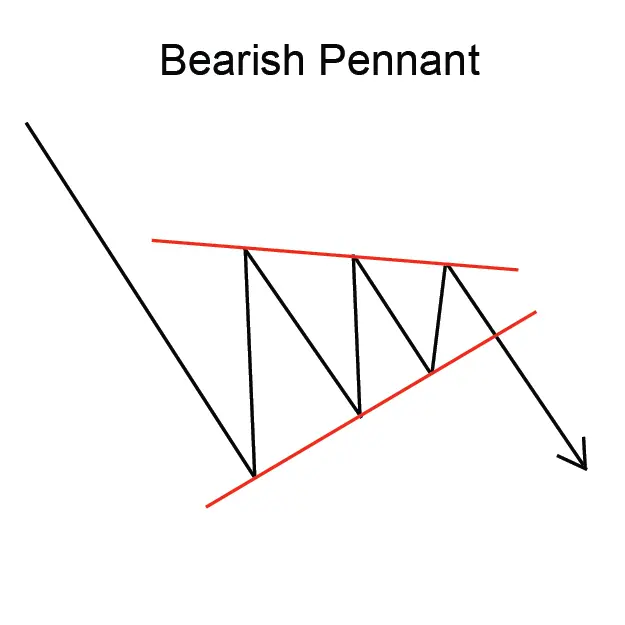
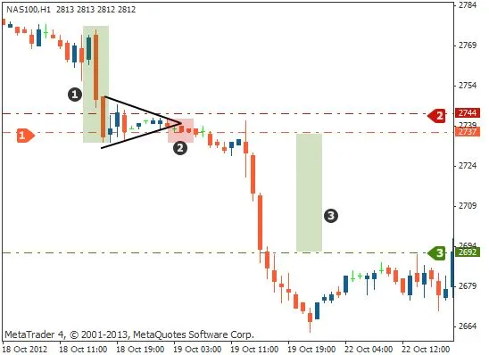

बैयरिश पेन्ट फ्लैग पैटर्न एक डाउनट्रेंड का सरणी चार्ट पैटर्न है यह दो गिरावटों के बीच एक संक्षिप्त संवाद की पुनर्मूल्यांकन से बना है।
यह पैटर्न आमतौर पर एक झंडा या ध्वजदंडा की तरह दिखाई देता है,
इसी से इसका नाम पड़ा।
बैयरिश पेन्ट फ्लैग पैटर्न एक मजबूत डाउनट्रेंड का संकेत देता है और
ट्रेडर्स इसे आमतौर पर ट्रेडिंग का अवसर के रूप में उपयोग करते हैं। पैटर्न में
प्रवेश करने के लिए, ट्रेडर्स आमतौर पर ध्वजदंडा के नीचे एक 'ब्रेकआउट'
खोजते हैं, ध्वजदंडा के ऊचाई के समान दूरी तक।
ध्वजदंड की लंबाई में ध्वज की निचली ओर से ध्वजदंड की शीर्ष तक की ऊचाई
प्रमुख है। ध्वज की चौड़ाई ध्वजदंड के शीर्ष से ध्वज के निचले भाग तक के
नीचे तोड़ने का समय होता है।
बैयरिश पेन्ट फ्लैग पैटर्न एक विश्वसनीय ट्रेडिंग पैटर्न नहीं है, लेकिन यह
एक मजबूत डाउनट्रेंड का संकेत देता है और ट्रेडर्स इसे आमतौर पर
ट्रेडिंग के अवसर के रूप में उपयोग करते हैं।
